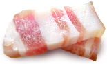

Животный жир, отлагается под кожей, возле почек, в брюшной полости. Функционально сало рассматривается как питательный запас в теле животного организма, состоящий в основном из триглицеридов, содержит большое количество насыщенных жирнокислотных остатков. Традиционно сало с луком - символ украинской кухни.Издавна свиное сало занимало почетное место в меню украинцев, да и в наши дни сало считается национальным украинским продуктом. Его едят соленым, копченым, вареным и жареным. А свиное сало с черным ржаным хлебом – лучше любого заморского деликатеса.
Многие считают сало вредным для здоровья, однако как гласит народная мудрость: «Толстеют не от свиного сала, а от его количества». Если съедать пару кусочков сала на голодный желудок, то можно быстро добиться ощущения сытости. Это не позволит вам переедать, и вы сможете сохранить хорошую фигуру. В настоящее время, даже появились диеты для похудения, основанные на умеренном потреблении сала.
Редко какое застолье обходиться без сала. Что и говорить, прекрасная закуска под водочку, самогон или горилочку. Да и быстрому опьянению сало не способствовало. Так что учтите это, и перед возлияниями съешьте кусочек сала. Это может спасти от тяжелого похмелья. Происходит это потому, что жирное сало обволакивает желудок и не дает напитку с градусами быстро усвоиться. Алкоголь впитывается позже, постепенно, уже в кишечнике. Спиртное же, со своей стороны, помогает быстрее переварить жир и разложить его на компоненты.
Полезные свойства салаСало – высококалорийный продукт, который содержит около 770 ккал на 100 граммов. Поэтому употреблять его нужно крайне осторожно и в умеренных количествах.
Сало богато жирорастворимыми витаминами A, E и D, и, главное, оно не бывает радиоактивным и не содержит канцерогенов. В свином сале есть арахидоновая кислота, которая относится к ненасыщенным жирам и является одной из незаменимых жирных кислот. Арахидоновая кислота помогает организму включить «иммунный ответ» при встрече с вирусами и бактериями. Поэтому свиное сало рекомендуется включать в зимнюю диету.
Немецкие ученые даже советуют включать рацион 20-30 грамм сала ежедневно, особенно в диеты для сердечных больных. Так как арахидоновая кислота (относящаяся к полезным Омега-6 ненасыщенным жирным кислотам), входит в состав клеточных мембран и является частью ферментов сердечной мышцы.
Сало содержит и множество других ценных жирных кислот, которые участвуют в строительстве клеток организма, а также играют большую роль образовании гормонов и холестериновом обмене. Они связывают и выводят из организма токсины. Причем, по содержанию этих кислот, сало опережает сливочное масло.
Именно в сале в оптимальном, хорошо усвояемом виде содержится селен, который является мощным антиоксидантом. По данным института РАМН, 80% россиян испытывают дефицит этого вещества . А спортсменам, кормящим матерям, беременным и курильщикам этот микроэлемент просто жизненно необходим. Кстати, в чесноке, который часто употребляют вместе с салом, тоже содержится большое количество селена.
Сало полезно при легочных заболеваниях, оно выводит из организма тяжелые металлы, очищает кровеносные сосуды, обладает противоопухолевыми свойствами, в нем не живут гельминты-паразиты. Свиное сало, особенно в сочетании с чесноком, повышает иммунитет и жизненный тонус, особенно в осенне-зимний период. А так же свиное сало является прекрасным желчегонным средством.
Диетологи рекомендуют есть сало с салатом из сырых овощей, заправленных нерафинированным подсолнечным маслом и натуральным уксусом (яблочным или виноградным), который является сильным антиоксидантом.
Кусочек сала – прекрасный «снэк» в рабочее время. Оно хорошо усваивается, не перегружает печень и дает аж 9 ккал энергии на 1 г продукта. Это гораздо полезнее, чем даже самая дорогая колбаса, булочка или пирожки.
А в народной медицине сало уже давно числится незаменимым средством при лечении больных суставов. Хороший рецептик: если на даче потянули спину, или здорово ушибли коленку, а обезболивающих нет, то примотайте шарфом к больному месту ломтик холодного соленого сала.
Кашицу из сала с чесноком можно в качестве экстренного средства приложить к воспаленному зубу. Это поможет вытянуть гной и не даст развиться воспалению дальше.
Наши прабабушки широко использовали сало в качестве косметического средства. Так, на основе растопленного свиного сала делали крема для лица, которые спасали кожу в холодную погоду. Самый распространенный – облепиховый крем (ягоды облепихи толкли, заливали небольшим количеством кипятка и смешивали с небольшим количеством растопленного сала).
С тем же растопленным салом (с добавлением чеснока, яйца и травяных отваров) делали укрепляющие маски для волос, компрессы для ресниц и бровей. Тем же средством «лечили» пересушенную кожу рук и губ: в растопленное сало добавляли пару капель касторового масла или пчелиного воска (сейчас можно добавить пару капель витамина А или Е) и смазывали губы перед выходом из дома в ветреную и холодную погоду.
Не следует забывать, что в свином сале содержится много холестерина, поэтому больше, чем 100 грамм сала в день употреблять не рекомендуется.